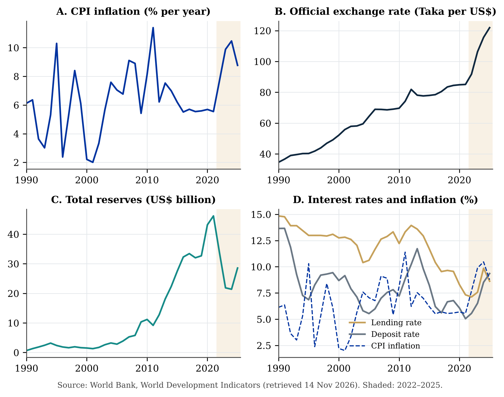
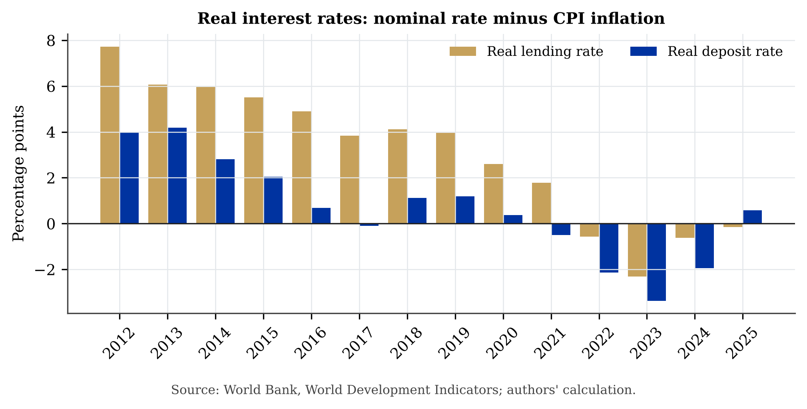
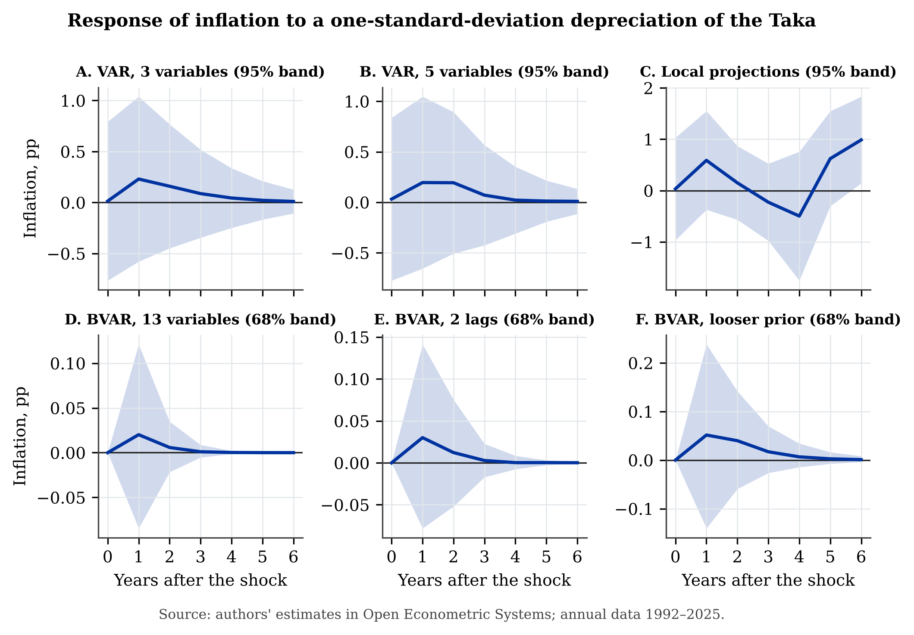
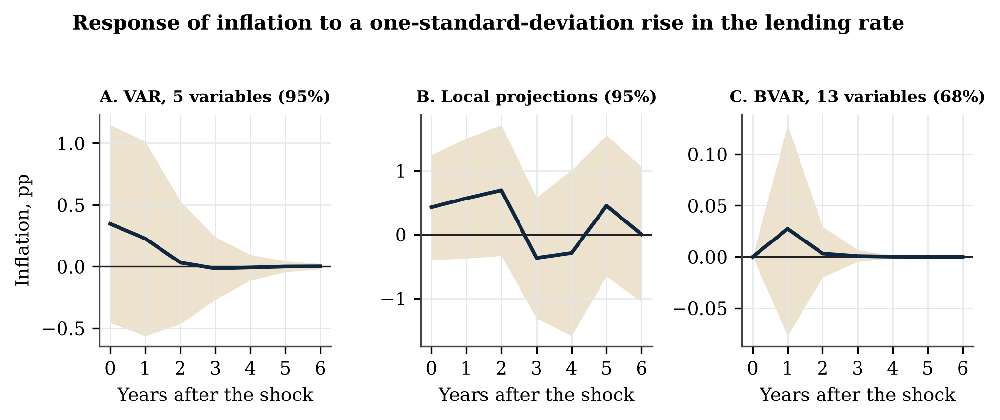
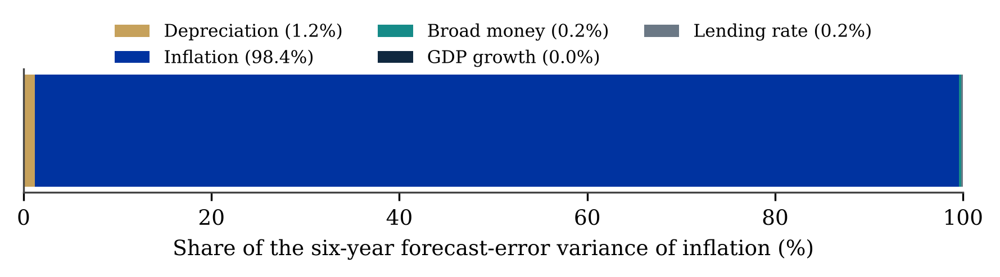

Dr. Tuhin G. M. Al Mamun and Dr Rahim Md Abdur · Statistical report · 2026-11-14
Cite as: Dr. Tuhin G. M. Al Mamun, and Dr Rahim Md Abdur (2026). Inflation, the Taka and the stance of policy in Bangladesh, 1992–2025. BIQEP Policy Briefs. Archived at https://doi.org/10.5281/zenodo.24215521.
Key findings
- Real lending rates were negative in 2022, 2023, 2024, 2025, and real deposit rates in 2022, 2023, 2024 (Figure 2).
- The Taka depreciated 43% between 2021 and 2025 (from 85.1 to 121.9 per US$), and reserves fell from US$46.2 billion in 2021 to US$21.4 billion in 2024 before recovering to US$28.6 billion in 2025.
- In the econometric models, pass-through from depreciation to inflation is positive but imprecise; 1 of 6 specifications show a response whose band excludes zero (Table 1).
- Private credit fell from 44.4% of GDP in 2015 to 34.5% in 2025, and real GDP growth slowed from 7.9% in 2019 to 3.5% in 2025.
1. Introduction
Bangladesh entered the 2020s with stable, moderate inflation. Between 2021 and 2024 inflation nearly doubled, the exchange rate adjusted sharply and reserves declined. This report asks two questions that bear directly on policy. First, how much of the rise in prices can be traced to the depreciation of the Taka? Second, did the stance of interest-rate policy lean against inflation, or follow it? We answer both with official data, several estimators that make different assumptions, and a fixed rule: the estimates are reported whatever they show.
The contribution is a transparent assessment on a common dataset. We use 13 series from a single compiled source, check overlapping series against a second source, and run the same question through nine specifications in the open Open Econometric Systems engine, so that every number can be reproduced.
2. Data
All series are annual, 1992–2025 (34 annual observations, 33 usable after one lag), from the World Bank World Development Indicators for Bangladesh, retrieved on 2026-11-14. The variables are: CPI inflation; the official exchange rate (Taka per US$), transformed to annual percentage depreciation; total reserves, in annual growth; real GDP growth; private consumption growth; and the annual change in the investment, export and import ratios to GDP, the deposit rate, the lending rate, broad money to GDP, private credit to GDP and the unemployment rate.
Validation
Real GDP growth was compared with the IMF DataMapper series for 2015–2025: the largest difference is 0.05 percentage points. CPI inflation differs between the two sources by up to 1.6 percentage points (largest in 2022, when the World Bank series is 1.6 points above the IMF series); the series are compiled on different annual bases, and we use the World Bank series throughout, noting that the level of 2022–2025 inflation depends on the source. The current-account balance differs by up to 2.7 percentage points of GDP, so it is not used. Remittances were not retrievable and are not used.
| Check | Sources | Largest gap | Status |
|---|---|---|---|
| Real GDP growth, 2015–2025 | World Bank vs IMF | 0.05 pp | Agrees |
| CPI inflation, 2015–2025 | World Bank vs IMF | 1.6 pp | Differs; World Bank used, disclosed |
| Current account, 2015–2025 | World Bank vs IMF | 2.7 pp | Differs; not used |
| All other series | World Bank only | n/a | Single compiled source |
3. What the data show
Figure 1 shows the record. Inflation stayed between 5.5% and 7.5% from 2012 to 2021, then rose to 9.9% in 2023 and 10.5% in 2024, easing to 8.8% in 2025. The Taka stood at 85.1 per dollar in 2021 and 121.9 in 2025. Reserves peaked at US$46.2 billion in 2021 and had fallen to US$21.4 billion by 2024.

Figure 2 turns the interest-rate panel into real rates. The real lending rate was -0.58 percentage points in 2022, -2.31 in 2023, -0.61 in 2024 and -0.15 in 2025. The real deposit rate was -2.14, -3.37, -1.95 and 0.58 over the same years. Savers therefore earned less than inflation for three consecutive years, and borrowers faced lending rates below inflation in each of the four years.

4. Empirical strategy
We estimate the response of inflation to two shocks: a depreciation of the Taka and a rise in the lending rate. Each is traced through three families of models, all run in Open Econometric Systems. (i) Reduced-form vector autoregressions with a recursive (Cholesky) ordering, in a three-variable and a five-variable version. (ii) Local projections with Newey–West standard errors, controlling for GDP growth, the lending rate and broad money. (iii) Bayesian VARs with a Minnesota prior on all 13 variables, which shrink the large system toward a stationary benchmark, with variations in lag length and prior tightness. The use of 13 variables is possible only in the Bayesian system: an unrestricted VAR on 13 variables with two lags has 27 coefficients per equation for 33 observations, leaving too few degrees of freedom, so adding variables there would make the estimates less, not more, reliable.
Identification. Recursive identification assumes that the shocked variable is not affected within the year by the variables ordered after it. For the depreciation shock this places the exchange rate first; for the lending-rate shock the rate is placed first. These are strong assumptions. The estimates describe dynamic correlations conditional on the ordering and should not be read as causal effects.
5. Results
5.1 Pass-through from depreciation to inflation
Figure 3 shows the response of inflation to a one-standard-deviation depreciation shock (about 4 percentage points). In all six specifications the response one year after the shock is positive, between 0.02 and 0.59 percentage points. The effect is imprecise: 1 of the six responses have a band that excludes zero at the peak (Table 1). In the local projections, the response is individually significant at only one of six horizons. (year 6)

| Specification | Response after 1 year (pp) | Largest response | Band | Band excludes zero at peak |
|---|---|---|---|---|
| VAR, 3 variables | 0.23 | year 1: 0.23 | 95% | no |
| VAR, 5 variables | 0.20 | year 1: 0.20 | 95% | no |
| Local projections | 0.59 | year 6: 0.99 | 95% | yes |
| BVAR, 13 variables | 0.02 | year 1: 0.02 | 68% | no |
| BVAR, 2 lags | 0.03 | year 1: 0.03 | 68% | no |
| BVAR, looser prior | 0.05 | year 1: 0.05 | 68% | no |
Table 1. Inflation response to a depreciation shock across specifications.
The Bayesian systems give smaller responses than the unrestricted VARs. This follows from shrinkage: the Minnesota prior pulls cross-variable effects toward zero, and loosening the prior from λ₁ = 0.1 to 0.2 roughly doubles the peak response. The BVAR bands are 68% credible bands, which are narrower than 95% bands and should be compared with that in mind.
5.2 Interest rates and inflation
Figure 4 shows the response of inflation to a rise in the lending rate. The sign is not stable across specifications and the bands include zero throughout. With annual data and a policy rate that moves in few discrete steps, the data do not support a precise estimate of how interest-rate changes feed into inflation in Bangladesh.

5.3 What drives inflation
Figure 5 decomposes the six-year forecast-error variance of inflation in the five-variable VAR. Inflation's own past accounts for 98.4%, depreciation for 1.2%, and the other three variables for the remaining 0.4%. High persistence is the dominant feature of the series.

6. Policy assessment
The assessment below separates what the data show from what the models can support.
Areas for policy attention
- Interest rates trailed inflation. Lending rates were below inflation in 2022, 2023, 2024, 2025 and deposit rates in 2022, 2023, 2024. Whatever the reason, the effect was to leave real borrowing costs near or below zero while prices were rising fastest.
- External buffers were run down. A 43% depreciation and a 54% fall in reserves between 2021 and 2024 show that the external adjustment was large and concentrated in a short period.
- Credit and investment weakened. Private credit fell from 44.4% of GDP (2015) to 34.5% (2025) and investment from 32.2% of GDP (2019) to 28.5% (2025). These are correlations with the tightening and the external stress, not estimated effects.
- Public revenue stays low. Central-government revenue was 9.5% of GDP in 2021, the latest year available, and never exceeded 11.2% in 2001–2021, leaving limited room for fiscal support.
Where the evidence is not strong enough
- The precise size of exchange-rate pass-through. The estimates are positive but imprecise, and a critic or defender of the exchange-rate policy cannot rely on them.
- The effect of interest-rate changes on inflation. The responses are statistically indistinguishable from zero in every specification.
Implications for discussion
These are judgements drawn from the record above, not estimates.
- Publishing a real-rate benchmark alongside each rate decision would make the stance of policy easy to judge.
- Gradual exchange-rate adjustment, announced in advance, would avoid concentrating the price effects in a short period.
- Reserve adequacy and the pace of adjustment should be reported together so that depreciation is not read in isolation.
- Monthly price, wage and exchange-rate series from the Bangladesh Bureau of Statistics and Bangladesh Bank should be used to estimate pass-through, because annual data cannot do it.
7. Limitations
- Annual data give 33 observations. Responses at one to six years are fragile, and the unrestricted VARs are small systems for that reason.
- Recursive identification is an assumption, not a result. The results are conditional on the ordering.
- Inflation differs by source (up to 1.6 percentage points). The level of 2022–2025 inflation depends on the choice of source.
- Reserves and the exchange rate are year averages or year-end values as published; intra-year movements are not captured.
- The ARDL bounds test and the structural VAR with bootstrap bands could not be run on this sample (an engine error for the first, too few observations for the second), and are not reported.
Data and replication
- Dataset (13 variables): data.csv
- Model specifications and full results: results.json
- Figures at 300 dpi: 1, 2, 3, 4, 5; vector versions (SVG) in the same folder.


Sources
- World Bank, World Development Indicators, Bangladesh: api.worldbank.org, retrieved 2026-11-14.
- International Monetary Fund, DataMapper: imf.org, retrieved 2026-11-14.
- Models: Open Econometric Systems, github.com/tuhingm/open-econometric-systems.